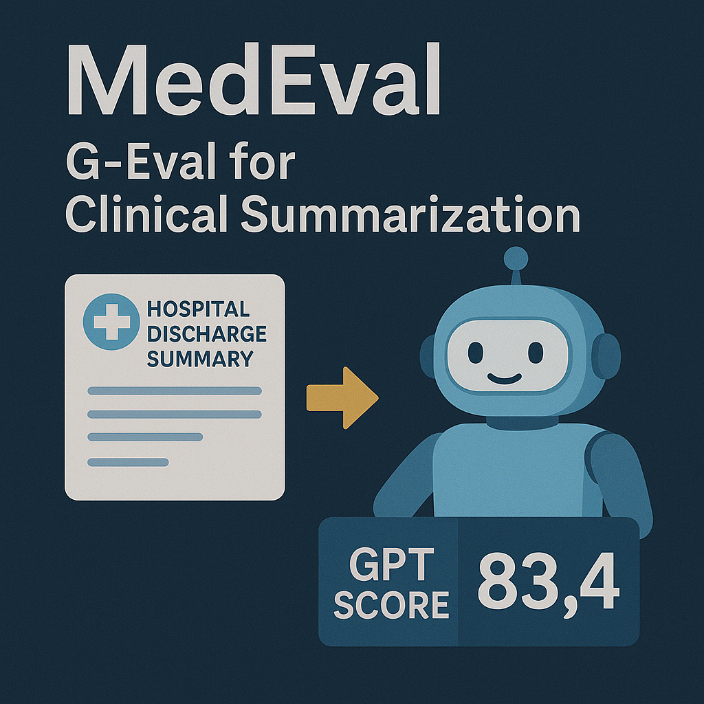
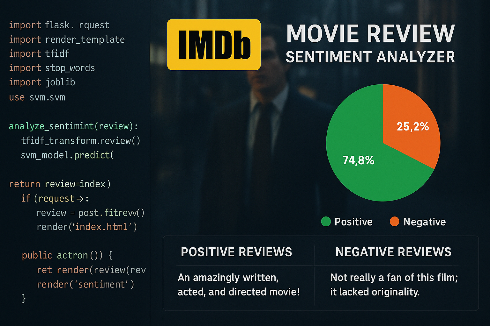
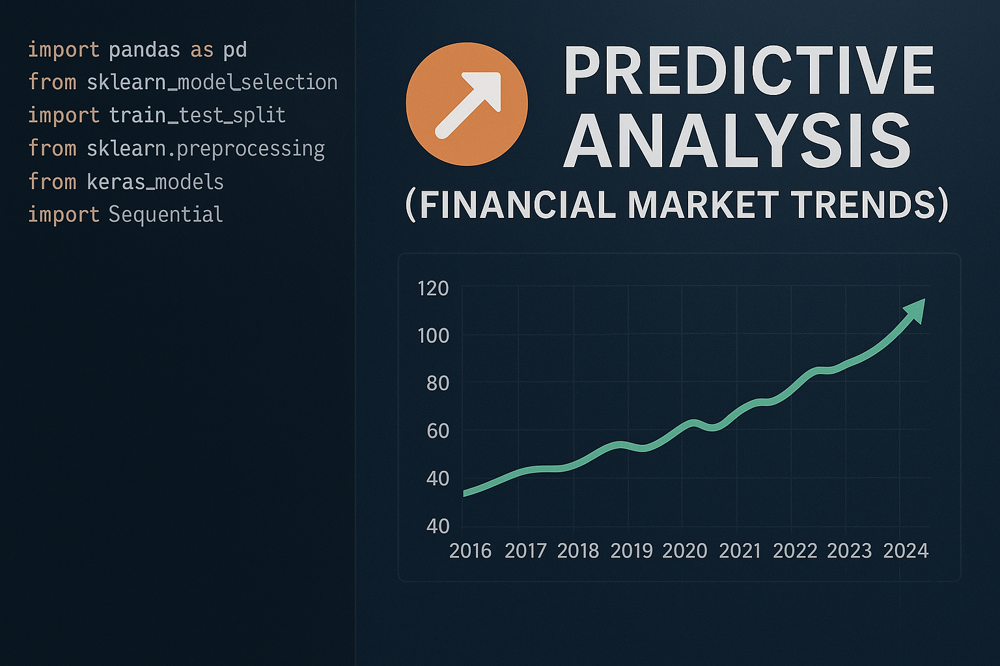
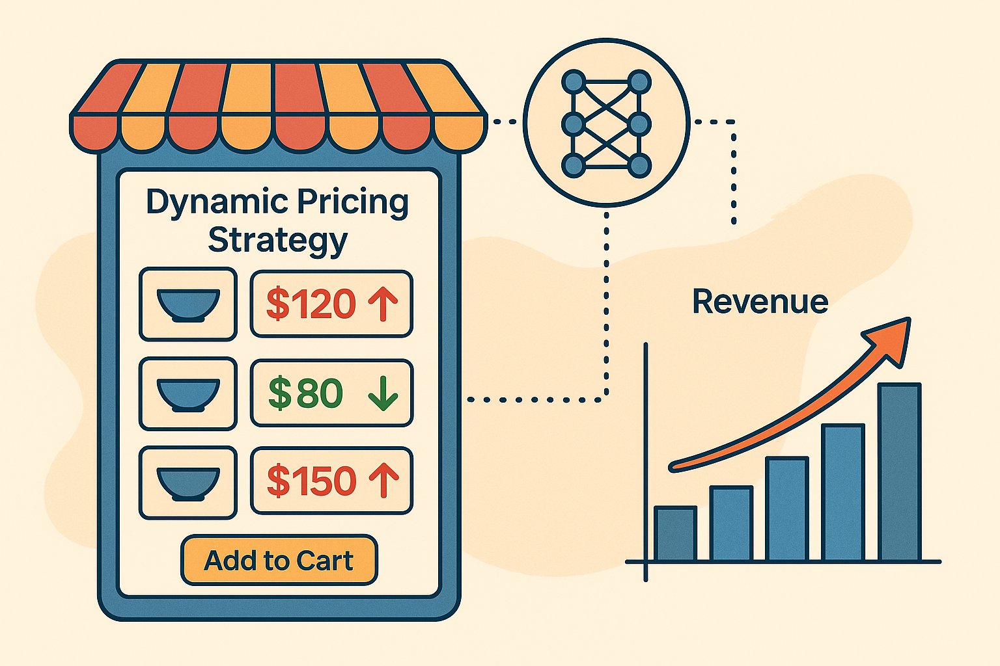

Decision-first thinking
I clarify the business decision before selecting the analytical technique.
DATA SCIENCE • AI • ANALYTICS • STRATEGY
I’m Drashti Mehta, a data scientist and analytics professional who connects technical analysis with business context. I build predictive models, decision-support systems, executive dashboards, and applied AI solutions designed to create measurable value.
Frame the business question and define success.
Find meaningful patterns, risks, and opportunities.
Translate findings into actions and recommendations.
WHO I AM
I am most interested in problems where the data exists, but the answer is not immediately clear.
My work begins before a model is selected or a dashboard is designed. I first seek to understand the decision, the people affected by it, the available evidence, the operational constraints, and the definition of success.
From there, I structure the problem, evaluate data quality, select an appropriate analytical method, test assumptions, and translate the result into a recommendation that technical and nontechnical stakeholders can use.
I am comfortable moving between statistical analysis, machine learning, business intelligence, forecasting, experimentation, data preparation, and AI evaluation. What connects these areas is a consistent focus on clarity, usefulness, and measurable impact.
I clarify the business decision before selecting the analytical technique.
I balance accuracy, explainability, scalability, and real-world usefulness.
I present implications, tradeoffs, risks, and next steps—not only outputs.
I bring structure, accountability, and momentum to cross-functional work.
MY APPROACH
My analytical process is designed to keep technical work connected to the purpose it serves.
Clarify the decision, stakeholder needs, constraints, risks, and expected business outcome.
Examine the data, validate assumptions, identify gaps, and understand potential sources of bias.
Develop an analytical, statistical, machine-learning, or reporting solution appropriate to the problem.
Test performance, interpretability, reliability, tradeoffs, and alignment with business objectives.
Present the findings through a clear narrative, recommendations, and actionable next steps.
CAPABILITIES
I work across the complete analytics lifecycle—from understanding the question to delivering the recommendation.
Identify performance drivers, behavioral patterns, KPI opportunities, adoption signals, and areas for improvement.
Develop models that estimate future outcomes, segment behavior, classify patterns, and support planning.
Compare AI approaches, evaluate model outputs, define quality criteria, and assess practical usefulness.
Build dashboards and reporting systems that create visibility, reveal trends, and support timely decisions.
Transform, validate, integrate, and structure data so that analysis and reporting can be trusted.
Translate business needs into analytical requirements, success metrics, technical tasks, and recommendations.
TECHNICAL ECOSYSTEM
SELECTED CASE STUDIES
These case studies focus on the problem, analytical approach, practical tradeoffs, and what the work demonstrates.

Traditional text-overlap metrics may not capture whether an AI-generated clinical summary is accurate, complete, readable, and useful to a healthcare professional.
Developed an evaluation framework comparing Mistral-7B and LLaMA-2-7B outputs using G-Eval, ROUGE, and BLEU, with emphasis on clinical quality and practical usefulness.
Health outcomes are influenced by multiple interacting behavioral and demographic factors. The challenge was to analyze those relationships while making the results clear.
Analyzed more than 2,000 records using Python, statistical methods, exploratory analysis, hypothesis testing, and Tableau-based visual storytelling.

Developed and compared sentiment-classification workflows using preprocessing, feature engineering, model validation, and performance analysis.
View project
Developed forecasting and reporting workflows to analyze historical patterns and support forward-looking decisions.
View project
Designed a decision framework incorporating customer behavior, demand patterns, market conditions, and competitive signals.
ANALYTICS & AI CONSULTING
I help professionals and teams turn unclear analytical questions into defined requirements, practical workflows, measurable outcomes, and clear recommendations.
A consulting conversation may focus on analytics strategy, dashboard planning, KPI design, AI and machine-learning opportunities, data storytelling, project structure, or evaluation of an analytical solution.
Discuss a Project or Consulting NeedClarify business questions, KPIs, priorities, reporting needs, and analytical opportunities.
Define dashboard structure, metrics, user needs, and executive reporting narratives.
Assess whether an AI approach is useful, measurable, interpretable, and appropriate for the problem.
Convert an ambiguous problem into requirements, analytical steps, milestones, and success criteria.
Strengthen the communication of findings, dashboards, model results, and recommendations.
BOOK A CONVERSATION
Schedule a focused 20-minute introductory conversation directly from my calendar.
I welcome professional discussions with recruiters, hiring managers, founders, analytics leaders, researchers, and potential collaborators.
Select an available time and receive a calendar invitation with Google Meet details.
View Available Times Prefer email? mdrashti143@gmail.comCONTACT
Use the option that best matches your reason for reaching out.
For recruiter conversations, consulting discussions, and professional introductions.
EmailFor roles, project details, partnerships, and professional inquiries.
LinkedInFollow my work, exchange ideas, and begin a professional conversation.
GitHubExplore selected machine-learning, analytics, forecasting, and AI projects.